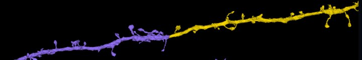
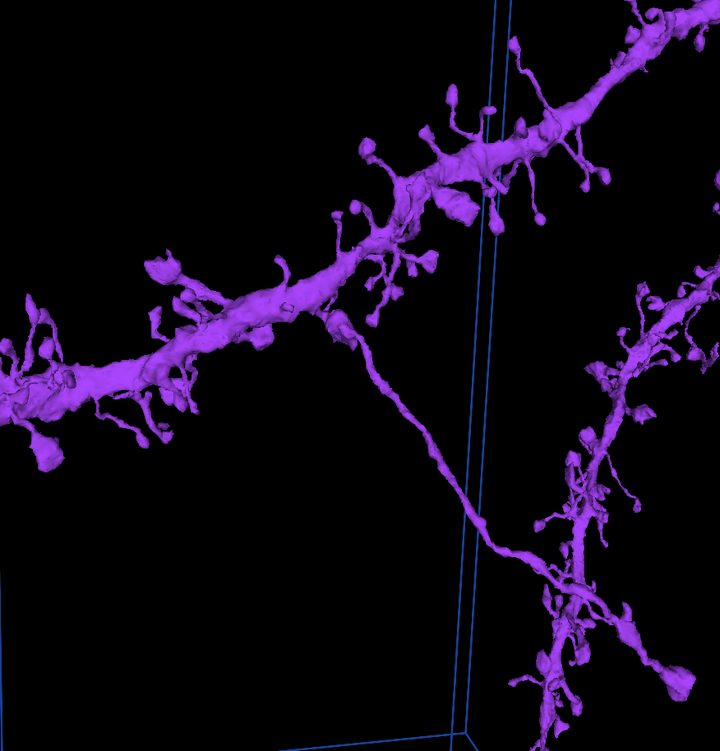
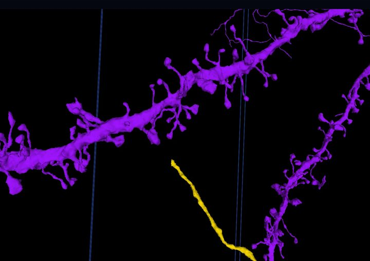
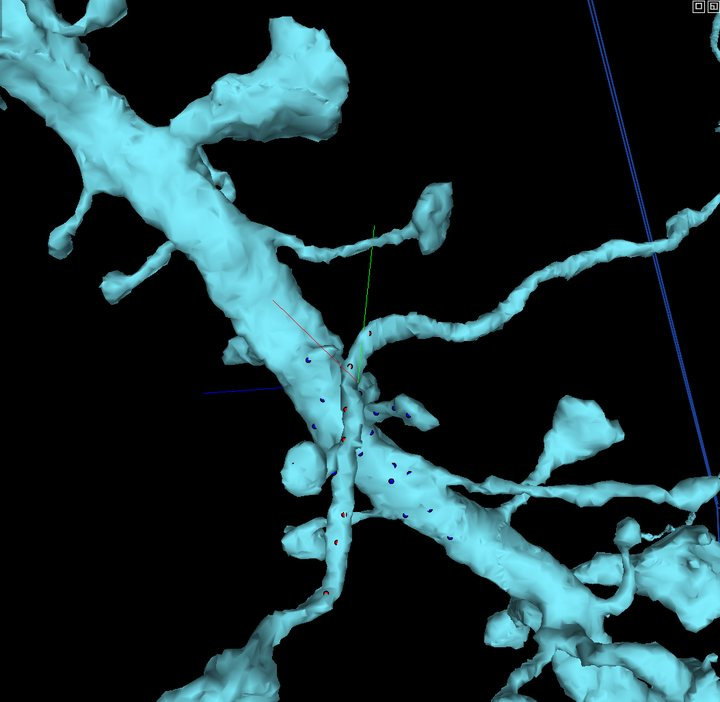

Proofreading
Merge and Cut
AI reconstructions of neurons are impressive, but not perfect. Sometimes the AI misses a branch and leaves it as its own segment. Sometimes it runs two neurons into one. Two moves fix both, and EyeWire II teaches each one on a real cell that is yours while you practise.
Cheat sheet
Keep this tab open beside the viewer.
| Merge tool | M |
| Cut tool | C |
| Place a point | Ctrl + click |
| Switch red and blue (cut) | G |
| Submit | Enter, or the Submit button on the bar at the bottom |
| Leave the tool | Esc |
| Fix a bad merge | Cut the pieces apart |
| Fix a bad cut | Merge them back |
There is no undo key. Every edit is reversible with the opposite edit.
Merge: reconnect a lost branch
A merge joins two segments that belong to the same neuron.

- Select the segmentation layer (press 2, or right-click its chip at the top).
- Press M. The merge bar appears at the bottom.
- Ctrl + click the loose branch, then Ctrl + click the cell close to where the branch should join.
- Press Submit merge or Enter. The server says "trying..." then "done", and the branch takes the cell's colour.
Merged the wrong thing? Cut it apart again. If a black box appears where the pieces meet, the new mesh is still being built: refresh the page.
Cut: separate two neurons
A cut splits one segment into two. Red points go on one side of the join, blue on the other, and the server finds the best place to separate them.



- Press C. The cut bar appears at the bottom, red group active.
- Ctrl + click three or four red points on the piece that doesn't belong, working back from the join.
- Press G to switch to blue, then Ctrl + click three or four blue points on the cell, just past the join.
- Keep every point on this one segment. Points on a neighbour make the server refuse the cut ("supervoxels must belong to the same segment").
- Press Submit cut or Enter. Wait for "splitting..." to finish.
Cut in the wrong place? Merge the pieces back and try again.
Try it on a real cell
In EyeWire II, open the book menu at the top right and pick Merge or Cut. Each tutorial hands you a sandbox cell that is yours alone while you work, walks you through the edit, and puts the cell back for the next person when you finish. If every cell is busy you join a short line and get a notification when one is yours.